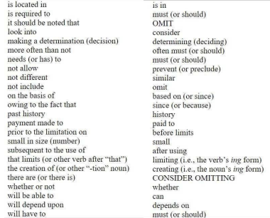

-
UNIT IV: BUILDING UP VOCABULARIES
-

UNIT IV: BUILDING UP VOCABULARIES
-

UNIT IV: BUILDING UP VOCABULARIES

UNIT IV: BUILDING UP VOCABULARIES
 INTRODUCTION
INTRODUCTION
Language learning is essential to all individuals specially when communicating human thoughts, feelings, and experiences, establishing relationships with others, and striving to make sense and order of the world.
One vital factor to improve all areas of communcation – listening, speaking, reading, and specially writing, is the development of vast, robous and wide range of vocabulary. In this unit, you shall learn about vocabulary and how you can develop it in writing.
 LEARNING OBJECTIVES
LEARNING OBJECTIVES
At the end of the lesson, you are expected to:
- Understand the meaning of vocabulary;
- Master the concept of diction;
- Understand the different types of diction;
- Understand the principles of dictions;
- Understand various effective ways of using words;
- Differentiate connotation from denotation, and
- Use connotation and denotation in explaining the meaning of words.
 ACTIVATING PRIOR KNOWLEDGE
ACTIVATING PRIOR KNOWLEDGE
ACTIVITY 1: Recall
Directions: Have you really considered just how many skills you actually apply when you write a composition, an essay, or even a piece of literature? Take a moment and write down on the table below as many actions as possible that can be associated with writing.| Actions and subskills associated with Writing |
|---|
| Actions | Subskills | ||
|---|---|---|---|
 PRESENTATION OF CONTENT
PRESENTATION OF CONTENT
TOPIC 1: VOCABULARY DEFINED
A vocabulary is a set of familiar words within a person's language. It is usually developed with age, and it serves as a useful and fundamental tool for communication and acquiring knowledge. Acquiring an extensive vocabulary is one of the largest challenges in learning a second language.
Vocabulary plays a fundamental role in comprehension. Since this is widely used in all five language macroskills (reading, writing, listening, speaking, and viewing), a reader, a writer, a spekear, a viewer, and a even a listener cannot understand or create a message a text without knowing the meaning of the words they are using.
Vocabulary is an important focus of language learning and refers to the knowledge of words, including their structure (morphology), use (grammar), meanings (semantics), and links to other words (word/semantic relationships).
TOPIC 2: DICTION
In writing, diction is the strategic choice of words based on the audience, context, or situation. It can also express additional meanings or particular styles. The words you would choose in an email to your teacher or work colleague are different from the words you’d choose when speaking to a close friend or a relative. The difference lies on diction.
What is Diction in Writing?
Diction is the careful selection of words to communicate a message or establish a particular voice or writing style. For example, flowy, figurative language creates colorful prose, while a more formal vocabulary with concise and direct language can help drive home a point.
What is the purpose of diction in writing?
Writers pick explicit words and expressions relying upon the result they're attempting to accomplish. The motivation behind a bit of composing decides its expression. In writing, authors regularly utilize casual lingual authority and interesting expressions or words utilized for non- exacting implications, similar to comparisons and analogies. Hence, diction comes in through the words usage if it is specialized, succinct, and formal, composed for a particular audience.
Different Types of Diction in Writing
Different styles of diction impact how different ideas are expressed.
-
Formal diction.
Formal diction uses grammatical rules and uses proper syntax or the formation of sentences. It is considered as a professional choice of words which can be found in legal documents like business correspondences and academic articles.
-
Informal diction.
Informal diction is more conversational and often used in narrative literature. This casual vernacular is representative of how people communicate in real life, which gives an author freedom to depict more realistic characters. Most of the short stories and novels use informal diction to make it easier to understand by anyone especially if the target audience is anyone.
-
Colloquial diction.
These are expressions which are connected to informal. It is generally representing a particular region or place or era or period. Contractions in American English such as “ain’t” instead of isn’t is an example of colloquial expressions, the use of colloquialisms make the writing more realistic.
-
Slang diction.
Slang is very informal language or specific words used by a particular group of people. You'll usually hear slang spoken more often than you'll see it put in writing, though emails and texts often contain many conversational slang words.
-
Poetic diction.
Poetic diction is driven by melodious words that identify with a particular subject reflected in a sonnet, and make a musical, or agreeable, sound. It generally includes the utilization of elucidating language, in some cases set to a beat or rhyme.
Six Principles in Diction
- Use clear and concise sentences, usually about 18 words long.
- Avoid redundancies, cliches wordiness, and highfalutin. Although may be used, avoid overusing “There” and “It”, drop it
- Use precise vocabulary. Be accurate. Condensed.
- Be consistent in pronoun POV
- Avoid sexist language.
- Use appropriate level of formality.
| INAAPPROPRIATE DICTION | CORRECTION |
|---|---|
| 1. Use clear and concise sentences, usually about 18 words long. | |
| Image is a very important factor in politics because once the reputation of a person is smeared by accusations, the people’s perception of the person is forever tainted and it may cause him to lose credibility and trust even when the truth behind allegations is not yet verified. | Image is an important factor in politics. Once the reputation of a person is smeared by accusations, the people’s perception of the person is forever tainted. The person may lose his credibility and trust, even when the allegations are not yet verified. |
| Bullying is something that can be prevented by the students and this has to be handled by parents and school staff. Parents and teachers can help children understand what bullying is and explain to the children that bullying is bad while the teachers too should get involved directly and educate children on the harmful effects that might bullying can cause to someone. | TRY MAKING THIS CONCISE AND CLEAR! |
| 2. Avoid redundancies, cliches wordiness, and highfalutin | |
| Although offsprings are taught not obtain free gifts from strangers, at the present moment many still do. | Although children are told not to take gifts from strangers, many still do. |
| There's a book on the table. | A book is on the table. |
| There's a coffee shop next to the station. | TRY FIXING THIS SENTENCES! |
| It seems as though we might need some more money. | |
| Out of the darkness, there rode a knight, smounted on a fine horse. | |
| Sample of cliche words and phrases: | |
|  | |
| 3. Use precise vocabulary. Be accurate. | |
| Shafts that control the brake during urgent situations are built inside MRT trains to keep the passengers free from harm. | Emergency levers are installed in every MRT train for the safety of the passengers. |
| There is a requirement that all students have an evaluation of their transcripts for placement purposes or to meet a prerequisite. | The college requires that the admissions office evaluate all student transcripts for placement and prerequisites. |
| We are endeavoring to construct a more inclusive society. | We're going to make a country in which no one is left out. |
| 4. Be consistent on pronoun POV | |
| We should simply accept the fate is simply an illusion; you must not leave our decisions something that does not exist. | We should simply accept the fate is simply an illusion; we must not leave our decisions something that does not exist. |
| They might start out by joking, but calling someone a name with the intent of hurting you is not okay. Be sure your child understands calling someone a name, even if he feel the person deserves it, is not okay and is a form of bullying. | TRY FIXING THIS SENTENCES BY USING A CONSISTENT PRONOUN |
| I would like to thank you my boss, Principal Parker, the staff, the people beind this award, and the young fellas of BHS for selecting me for this honor. | |
CHOOSING THE CORRECT WORD AFFECTS MEANING
-
Choosing the correct word is sometimes interlinked with spelling. For example, it is vital to
know which of the following word to choose:
To, too, two
You’re, you
Where, were, we’re
Their, there, they’re
Effect, affect
-
In a spoken communication, conversational participants can immediately ask for and give
clarification. However, in written communication, writers have only but one chance to
communicate their message. Hence, they must choose the most appropriate word.
The following sentences show the change in meaning by changing one word:
The man walked across the street.
The man strolled across the street.
The man rushed across the street.
The man dawdled across the street.
The man stumbled across the street.
Changing the verb gives us more information that changes the meaning subtly but importantly. If this were an eyewitness account of a road accident, the verb chosen would provide critical information that may affect the outcome of the investigation.
-
Additionally, the wrong choice of words can change the message intended to the listener or
reader. To avoid misinterpretation, use strong and exact verbs, specific color, and appropriate
use of adjectives and adverbs. (Aguila, Galan, & Wigley, 2017)
Examples
Without strong and exact verb: Joshua’s gift was surprising his mother.
With strong and exact verbs: Joshua’s gift surprised his mother.
Without specific color: His red blood flows from the cross of salvation.
With specific color: His scarlet red blood flows from the cross of salvation.
Inappropriate use of adjective/adverb: The police shouted loudly to the snatcher.
Appropriate use of adjective/adverb: The police shouted to the snatcher.
TOPIC 3: EFFECTIVE USE OF WORDS
Six characteristics of word usage:
- concrete and specific, not vague and abstract
- concise, not verbose
- familiar, not obscure
- precise, not ambiguous
- constructive, not destructive
- appropriately formal
-
Concreteness and Specific
Concrete and spefici word usage involves tangible qualities/characteristics and things we know through our senses. Specific language designates particular items or individuals cases.
Consider the examples below.Abstract Concrete To excel in college, you’ll have to work hard. To excel in college, you’ll need to attend every class; do all your reading before you fo; write several drafts of each paper; and General Specific The student enjoyed the class. Rhea enjoyed Mr. Gallardo’s 8:00 a.m. EAPP class. -
Conciseness
It involves using the most appropriate terms to get one’s point across. Conciseness means using a minimal amount of effective terms to convey one’s argument. To make the sentence more succinct, writers must avoid unnecessary words in their sentences.
Verbose/Wordy Concise Leah believed but could not verify that James had feelings of affection for her. Leah assumed that James adored her. My professor demonstrated some of the ways and methods for cutting words from my essay that I had written for the class. My professor demonstrated methods for cutting words from my essay. Ludwig’s castles are an astounding marriage of beauty and madness. By his death, he had commissioned three castles. Ludwig’s three castles are an astounding marriage of beauty and madness. -
Familiarity
It refers to words/ terms that the reader easily recognizes and understands because they use them regularly. The message has a greater effect when using vocabulary that is familiar to the reader.
Unfamiliar Familiar After our perusal of pertinent data, the conclusion is that a lucrative market exists for the subject property. The data we studied show that your property is profitable and in high demand. The use of unfamiliar words or highfalutin words can eliminate the essence of the message like in both examples below:
A letter sent to senior high school students warning them of the risks of an unhealthy diet:Individuals who maintain a diet of high-fat consent are exposed to an increased risk of developing atherosclerosis, which is a buildup of fat deposits on the inner walls of the arteries. This condition can reduce or cut off the flow of blood in the arteries serving the major organs of the body. This can lead to poor health.
An assignment given to a class of ABM students by their philosophy teacher:The presently assigned paper necessitates an eloquently articulated analysis of the Existentialist perspective as it pertains to contemporary living. You should adumbrate the points which represent the sine qua non of your analysis.
-
Preciseness
Through the use of precise word usage, vocabulary of specific nouns ,and vivid verbs, you can construct clear mental images and avoid wordiness. Moreover, the use of concise language, using the fewest possible words without sacrificing meaning, makes your writing more understandable.
Precise writing replaces vague terms for accurate nouns and active verbs.
Examples:
Imprecise Precise Entrepreneurs use professional writing skills to communicate with others. Entrepreneurs use professional writing skills to communicate effectively with clients and business partners. Research is taught early in the academic world. Research is taught to first-year university students. -
Constructive Word Usage
The use of constructive language expresses a potentially negative in a positive way, while destructive language leads the reader to blame and criticism, causing defensiveness.
Destructive Constructive The problem is.. The challenge is.. What you do not understand is .. Let me explain in a different way. It is not my problem. How can I help? -
Formality of Language
The formality of the language used should conform to the formality of the situation and the relationship between the writer and the reader. Consider the following examples.
Very Formal Formal Informal Exceedingly large segments of the population are expressing their discontent with medical practitioners who appear to more engrossed in amassing financial assets than in providing efficacious care to people with health disorders. A large number of consumers are complaining about medical doctors who are apparently more interested in making money than in providing effective health care. A lot of people are unhappy with their doctors who only seem to care about how much money they make, and not giving their patients good care.
TOPIC 4: USING CONNOTATION AND DENOTATION
Another way of improving of understanding the different meanings that particular words can have is through connotation and denotation. Words only make sense to us if we understand what they mean. Two ways of describing the meaning of a word are called denotation and connotation.
Denotation is the basic, precise, literal meaning of the word that can be found in a dictionary. Connotation, meanwhile, is the positive, negative or neutral feelings, attitudes, ideas, or associations with a word. These shades of meaning are affected by social overtones, emotional meanings, or cultural implications.
For example, the color "red" has many connotations: it can represent a joyous occasion because it is very festive, or it can represent anger (as in the idiom "seeing red) or being called a member of the "reds" has historical associations with leftist organizations.
To illustrate the difference between denotation and connotation. compare the following meanings of the words "father" and "daddy":
Father
Denotation: a male parent.
Connotation: -association: positive
-feelings: love and respect
Daddy
Denotation: a male parent.
Connotation: -association: positive
-feelings: love, familiarity, childhood
The denotations of "father" and "daddy" are synonymous because they both pertain to a male parent. However, denotations do not reveal the individual responses of people to a word. "Daddy" is more connotative than "father," even though they denote the same thing because many children have fond memories of their fathers. Of course, this does not discount that each reader has a different relationship with his or her father. Two words may have the same definition but can have different emotional content.
 APPLICATION
APPLICATION
ACTIVITY 2: DENOTATION OR CONNOTATION
Directions: Write a sentence for each word in the series that follows. Employ your knowledge on connotative and denotative meaning of words. Make sure your answers reinforce each word's connotations.
1. Stroll, trudge, loiter______________________________________________________________________________
______________________________________________________________________________
______________________________________________________________________________
______________________________________________________________________________
_______________________________________________________________
2. Tour, pilgrimage, vacation
______________________________________________________________________________
______________________________________________________________________________
______________________________________________________________________________
______________________________________________________________________________
_______________________________________________________________
3. Enemy, antagonist, opponent
______________________________________________________________________________
______________________________________________________________________________
______________________________________________________________________________
______________________________________________________________________________
_______________________________________________________________
4. Crown, throne, ring
______________________________________________________________________________
______________________________________________________________________________
______________________________________________________________________________
______________________________________________________________________________
_______________________________________________________________
5. Blood, war, kingdom
______________________________________________________________________________
______________________________________________________________________________
______________________________________________________________________________
______________________________________________________________________________
ACTIVITY 3
Directions: Read the following article found in the given link. Next, choose ten words that are unfamiliar to you and underline them. Afterwards, write the approximate meaning of your selected words using the table below. Fill out this table after reading the article. Suggested article: "Shouldn't There Be a Word...?" Then, answer the questions that follow.
Author: Barbara Wallraff
Link: https://theamericanscholar.org/shouldnt-there-be-a-word/| Unfamiliar words | Your own definition based on your understanding | Definition from the dictionary | The connotation of the word |
|---|---|---|---|
___________________________________________________________________________
___________________________________________________________________________
___________________________________________________________________________
___________________________________________________________________________
____________________________________________________________
2. How did you arrive with your own definition of the word?
___________________________________________________________________________
___________________________________________________________________________
___________________________________________________________________________
___________________________________________________________________________
____________________________________________________________
3. How does the connotation of the word affect your understanding of its meaning? State an example.
___________________________________________________________________________
___________________________________________________________________________
___________________________________________________________________________
___________________________________________________________________________
____________________________________________________________
ACTIVITY 4: ANAGRAM
Directions: An anagram is a word or phrase made by rearranging the letters in another word or phrase. See how many anagrams you can make for each of the words below. (The first one is done for you.) Each word has at least two anagrams. Remember that some letters often go together, such as st or ea. Also, some letters can make more than one sound, for example the c in cat and face.
| 1. east | 2. taps | 3. |
|---|---|---|
| seat | ________ | ________ |
| eats | ________ | ________ |
| teas | ________ | ________ |
| sate | ________ | ________ |
| 4. pools | 5. tales | 6. shape |
| ________ | ________ | ________ |
| ________ | ________ | ________ |
| ________ | ________ | ________ |
| ________ | ________ | ________ |
| ________ | ________ | ________ |
| 7. snap | 8. plate | 9. times |
| ________ | ________ | ________ |
| ________ | ________ | ________ |
| ________ | ________ | ________ |
| ________ | ________ | ________ |
| ________ | ________ | ________ |
ACTIVITY 5
Directions: Create a paragraph about Fiesta in the Philippines. Choose only one type of diction in
writing. Write your paragraph on the space provided.
Answer:____________________________________________________________________________
___________________________________________________________________________________
___________________________________________________________________________________
___________________________________________________________________________________
ACTIVITY 6
Directions: Answer the following questions.
-
In what references or reading materials do you see formal Diction?
________________________________________________________________________ ________________________________________________________________________
________________________________________________________________________
________________________________________________________________________
________________________________________________________________________
________________________________________________________________________
________________________________________________________________________
________________________________________________________________________
-
What about the informal?
________________________________________________________________________ ________________________________________________________________________
________________________________________________________________________
________________________________________________________________________
________________________________________________________________________
________________________________________________________________________
________________________________________________________________________
________________________________________________________________________
-
How about in colloquial and slang?
________________________________________________________________________ ________________________________________________________________________
________________________________________________________________________
________________________________________________________________________
________________________________________________________________________
________________________________________________________________________
________________________________________________________________________
________________________________________________________________________
-
What do you think is the proper diction in academic writing? Will there be an impact to writing?
________________________________________________________________________ ________________________________________________________________________
________________________________________________________________________
________________________________________________________________________
________________________________________________________________________
________________________________________________________________________
________________________________________________________________________
________________________________________________________________________
 REFLECTION
REFLECTION